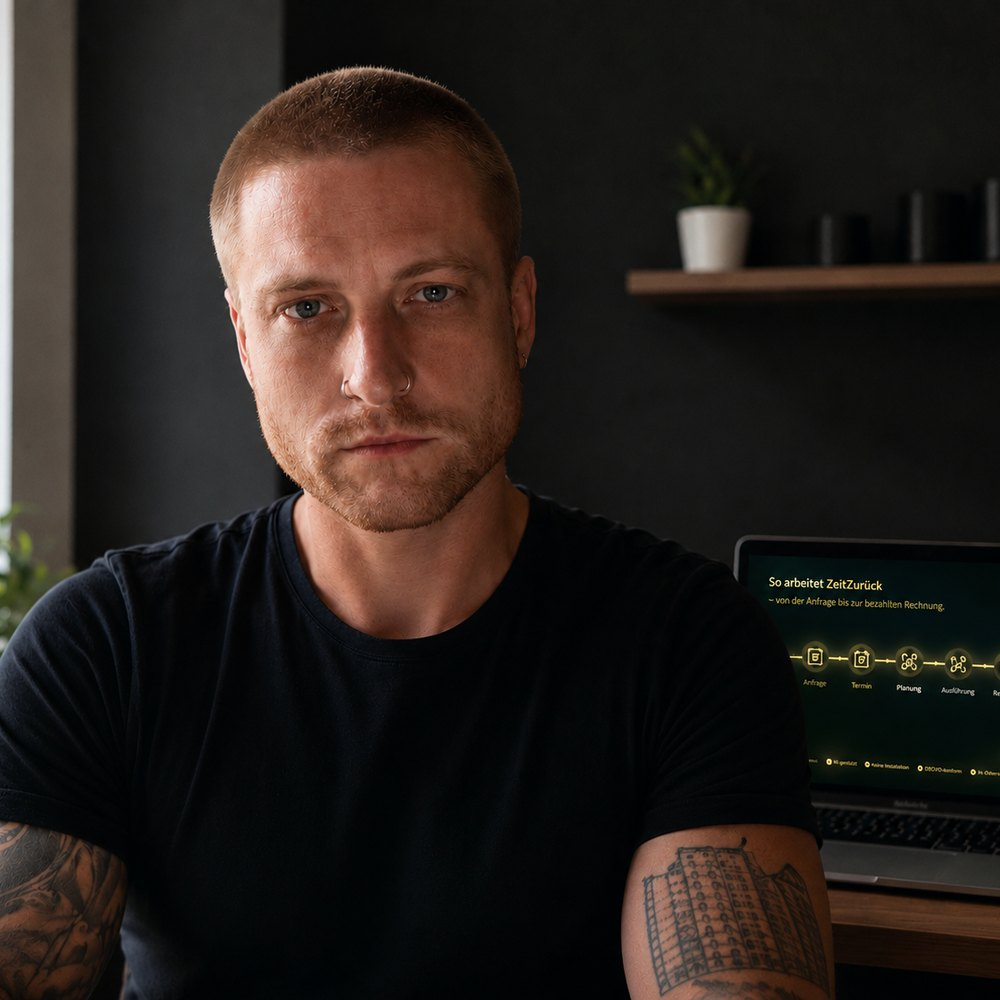

Gebaut, weil Büroarbeit nicht Ihre eigentliche Arbeit sein sollte.

Ich bin Alvin Ehrnberger. Ich habe ZeitZurück entwickelt, damit kleine Betriebe weniger Zeit mit Anfragen, Terminen und Rechnungen verbringen — und mehr Zeit für die Arbeit haben, für die ihre Kunden sie eigentlich brauchen.
Ich führe selbst einen kleinen Betrieb: Möbelmontage in Wien und Niederösterreich. ZeitZurück nimmt dort meine Anfragen auf, bucht meine Termine und schreibt meine Rechnungen.
Ich weiß, wie sich der Abend anfühlt, an dem die Arbeit fertig ist und das Büro erst anfängt. Genau dafür gibt es ZeitZurück.
Alvin EhrnbergerGründer von ZeitZurück